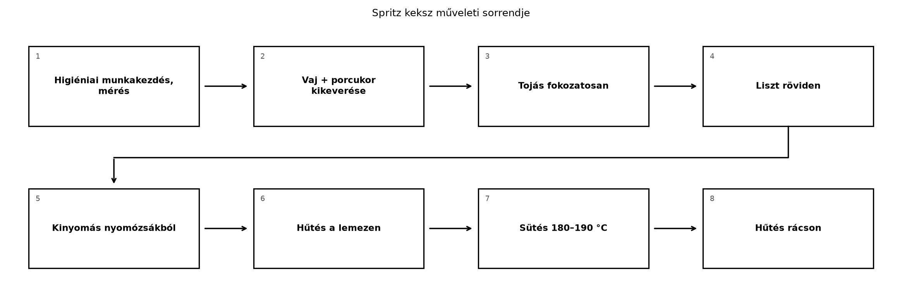

A cukrászműhelyben délutánra 40 db kevert omlós teasüteményt kell készítened. A gyúrt omlós tésztát már ismered, de ez a tészta lágyabb, és nyomózsákkal kell formázni. Ha rosszul kevered ki, a keksz szétfolyik a lemezen, vagy kemény lesz, mint egy kétszersült. Ebben az alfejezetben megtanulod, hogyan keverd ki a vajat a cukorral, mikor add hozzá a tojást, és hogyan alakítsd ki a három alaptípust: nyomózsákos, lapra kent és formába töltött tésztát.
Képzeld el a fényes, krémesre kevert vajat a porcukorral. Amikor a tojás már teljesen beépült, a massza sűrű, levegős emulzió. A lisztet csak annyira húzod bele, hogy a tészta éppen egynemű legyen, még puha, kinyomható. Hűtés után a tészta stabil, de a gyúrt omlósnál lágyabb marad. Nyomózsákból csillagmintás kekszeket formázol, vagy késsel lapot kensz belőle. A sütőben a lerakott tészta kissé terül, de megtartja formáját; felülete aranybarnára sül.
Definíció. A kevert omlós tészta olyan omlós tészta, amelyet nem gyúrnak, hanem kikevernek: a puha zsiradékot (vaj vagy margarin) cukorral és tojással habosítják, majd rövid mozdulatokkal hozzákeverik a lisztet. A tészta lágy, nyomható vagy kenhető állagú, mert a sikérszálak nem fejlődnek ki.
Definíció. A kevert omlós tésztákat feldolgozás szerint három csoportba soroljuk:
Mérj ki minden anyagot, a tojást és a vajat vedd ki idejében, hogy szobahőmérsékletű legyen (a vaj 22–24 °C, tanulási példa, ellenőrizendő: gyártói ajánlás). A lisztet és a sütőport szitáld át, a porcukrot is törd át, ha csomós. A sütőt melegítsd elő 180–190 °C-ra (ellenőrizendő: a receptúra és a sütő típusa szerint).
A puha vajat vagy margarint a porcukorral és a sóval egy keverőtálban keverd habosra. Kézi habverővel vagy gépi lapátkeverővel dolgozz közepes fokozaton 2–3 percig, amíg a massza kivilágosodik, levegőssé válik. Miért? A cukorkristályok apró levegőbuborékokat dörzsölnek a zsiradékba; ezek a sütőben tágulnak, és lazítják a tésztát. A só nemcsak ízesít, hanem erősíti a sikért, és kiegyensúlyozza az édességet.
A tojást (vagy tojássárgáját) fokozatosan, kis adagokban add a habos keverékhez, minden adag után simára keverve. Miért? Ha egyszerre öntöd hozzá, az emulzió megtörik, a massza kicsapódik. A tojás víztartalma felszívódik a zsiradékban, és a massza krémesebbé válik. A tojásfehérje több nedvességet ad, ezért a tojásos tészta lágyabb, a tojássárgás gazdagabb, omlósabb.
A lisztet (és sütőport) rövid mozdulatokkal, alacsony fordulaton vagy kézzel keverd bele, csak addig, amíg a tészta egynemű lesz. Miért? A túlkeverés húzza a sikért, a tészta nyúlóssá és sütés után keménnyé válik. Az omlósság feltétele, hogy a sikér ne fejlődjön ki teljesen. Ha a tészta túl meleg, hűtsd le.
Nyomózsákos tésztánál a frissen kikevert, lágy (kb. 18–20 °C) tésztát azonnal kinyomjuk, és a lemezen a darabokat 20–30 percig hűtjük, majd sütjük (tanulási példa, ellenőrizendő: szakkönyv). Lapra kent és formába töltött tésztánál a tésztát formázás előtt 30–60 percig hűthetjük (4–6 °C, tanulási példa, ellenőrizendő). Miért? A hűtés visszadermeszti a zsiradékot, a tészta vagy a kinyomott minta stabilabb, sütéskor kevésbé folyik szét. A nagy vajtartalmú, hidegre hűtött tészta viszont nyomózsákból már nem nyomható ki.
Nyomózsákos formázás (spritz): A tésztát vastag csillagcsöves vagy furatos nyomózsákba töltjük. Sütőlemezre sütőpapír vagy szilikonos lap kerül. A zsákot derékszögben tartva, egyenletes nyomással azonos méretű korongokat, csíkokat, koszorúkat vagy S alakokat nyomunk. A darabok között hagyjunk 3–4 cm távolságot, mert sütés közben nőnek és kissé terülnek.
Lapra kent formázás: A tésztát a sütőlemezre tesszük, és egyenletes, kb. 5–8 mm vastag réteggé kenjük. A felületet nedves kézzel vagy palettával simíthatjuk. A lapot süthetjük egészben, majd kihűlés után szeleteljük, vagy sablonnal mintázzuk.
Formába töltött formázás: A tésztát kapcsos tortaformába vagy piteformába kanalazzuk, és lapáttal vagy vizes kézzel az aljára és az oldalára simítjuk. A forma aljára sütőpapírt tehetünk. A túl vastag réteget kerüljük, mert a közepe nyers maradhat.
A kevert omlós tésztákat előmelegített sütőben sütjük. Jellemző hőmérséklet:
| Formázás | Sütési hőmérséklet (°C) | Sütési idő (perc) | Megjegyzés |
|---|---|---|---|
| Nyomózsákos keksz | 180–190 | 8–12 | a vastagságtól függ |
| Vékony lap | 180–190 | 12–15 | a lap méretétől függ |
| Formában sült | 175–185 | 20–30 | a forma átmérőjétől és vastagságtól függ |
A hőmérséklet és az idő tanulási példa, a konkrét berendezéshez és recepthez igazítandó (ellenőrizendő: gyártói utasítás, saját sütő tesztje).
A forró tésztát ne mozgasd azonnal, mert könnyen törik. Hagyd a lemezen 2–3 percig, majd palettával emeld rácsra, és ott hűtsd ki teljesen. A kihűlt kevert omlós terméket porcukorral szórhatod, lekvárral, csokoládéval bevonhatod vagy betöltheted. A formában sült lapot a formából kissé kihűlve vedd ki, és rácsra téve hűtsd tovább.
Jogszabály. Az élelmiszer-higiéniai követelményeket a 852/2004/EK rendelet (élelmiszer-higiénia) határozza meg: a berendezéseknek, munkafelületeknek tisztának kell lenniük, a dolgozó köteles betartani a személyi higiéniát. Az allergének jelölését az 1169/2011/EU rendelet (FIC) II. melléklete szabályozza; a kevert omlós tésztánál jellemzően a glutén, tojás és tej jelölendő (ellenőrizendő: aktuális rendeletmódosítások és a termék konkrét receptúrája). A sütési hőmérsékleteket és a hűtési időket az üzem HACCP-terve rögzíti, a NÉBIH jó higiéniai gyakorlat útmutatói szerint (ellenőrizendő).
Készíts el egy adag nyomózsákos kevert omlós tésztát, formázd egyenletesen, süsd meg, és ellenőrizd a minőséget.
Biztonsági korlát. A gépi keverőt csak oktatás után és felügyelet mellett kezeld; a gép védőrácsát ne iktasd ki, tisztítás előtt áramtalaníts. Otthon háztartási géppel, kis adagban gyakorolj. A sütő forró, a lemez kihűléséig kesztyűvel fogd.
Tiszta munkaruha, hajháló vagy sapka, rövid körmök, ékszer nélkül. Alapos kézmosás, tiszta eszközök és felületek. Nyersanyag-ellenőrzés: friss tojás, nem avas vaj, száraz, nem dohos liszt.
Technológiai lap. Termék: spritz (nyomózsákos) kevert omlós keksz. Termékcsoport: omlós tészta, teasütemény. Alapmennyiség: 1 sütőlemeznyi, körülbelül 40 db, össztészta kb. 780 g.
Termék neve, termékcsoport, alapmennyiség: Spritz keksz, kevert omlós tészta, kb. 40 db.
Anyaghányad:
| Nyersanyag | Mennyiség (g) | Arány (%) | Megjegyzés |
|---|---|---|---|
| Vaj | 200 | 25,8 | puha, 22–24 °C |
| Porcukor | 160 | 20,6 | átszitálva |
| Tojás | 80 | 10,3 | közepes, kb. 1,5 db |
| Finomliszt | 320 | 41,2 | gyenge-közepes sikértartalmú |
| Sütőpor | 4 | 0,5 | gluténmentes, ellenőrizendő |
| Vaníliás cukor | 10 | 1,3 | vagy vaníliakivonat |
| Só | 2 | 0,3 | finom szemű |
| Összes | 776 | 100,0 | nyers tészta összesen |
Eszközök és gépek: keverőgép lapátkeverővel vagy kézi habverő, tál, mérleg, szita, spatula, nyomózsák, csillagcső, sütőlemez, sütőpapír, hűtő, sütő, rács.
Műveleti sorrend:
Kritikus pontok: A kevert tészta nem hőkezelt; a tojásos alapanyag miatt a sütésnek el kell érnie a 75 °C maghőmérsékletet (tanulási példa, ellenőrizendő: HACCP-terv). A nyers tészta fogyasztása tilos. A hűtés 4–6 °C között tartandó, a tészta hűtés nélküli tárolása maximum 30 perc (ellenőrizendő). A kihűlt terméket száraz, tiszta, légmentes dobozban tárold.
Allergének: glutén (búzaliszt), tojás, tej (vaj). A sütőpor és a porcukor származékai nem tipikus allergének, de a gyártói adatlapot ellenőrizni kell. A műhelyben használt olajos magvak keresztszennyeződést okozhatnak; a “nyomokban” jelölést csak a tényleges kockázat esetén alkalmazzuk.
Minőségi jellemzők: egyenletes forma, aranybarna felület, omlós, nem kemény morzsalék, kellemes vajas íz, nem égett.
Tárolás, eltarthatóság: száraz, zárt dobozban 20 °C alatt 5–7 nap (ellenőrizendő). Tálalás előtt porcukorral vagy csokoládéval díszíthető.
A műveleti sorrendet az alábbi folyamatábra foglalja össze (a nyomózsákos változatnál a kinyomott darabokat hűtjük a lemezen).

Az eszközöket mosogatd el, a gépet áramtalanítás után tisztítsd meg. A munkafelületet fertőtlenítsd. Töltsd ki a technológiai lapon a sütési hőmérsékletet, időt és az érzékszervi ellenőrzés eredményét.
A kevert omlós tészta termékeknél ellenőrizd:
| Tünet | Ok | Megelőzés, javítás |
|---|---|---|
| Sütés közben szétfolyik | Túl puha zsiradék, nem hűtötték a tésztát, kevés liszt, alacsony hőmérséklet | Hűtsd a tésztát, pontos mérés, magasabb sütőhőmérséklet; sütés közben nem javítható |
| Kemény, rágós | Túlkevert tészta, sok liszt, túl hosszú sütés magas hőmérsékleten | Rövid keverés, pontos arány, idő és hőfok betartása |
| Repedezik, száraz | Kevés nedvesség, túl vastag formázás, túl gyors kéregképződés | Tojás arány növelése, egyenletes vastagság, közepes sütőhőmérséklet |
| Nyers a közepe | Túl vastag tészta, alacsony sütőhő, rövid idő | Vékonyabb formázás, maghőmérséklet-ellenőrzés |
Hiba. Ha a keksz sütés közben szétfolyt: tünet a lemezen összefolyt, vékony, zsíros korongok. Hipotézis: a vaj túl meleg volt a keverésnél, vagy a tészta nem volt hűtve. Ellenőrzés: mérjük meg a tészta hőmérsékletét formázás előtt (javasolt kb. 18–20 °C, lágy, de nem olvadt), és nézzük meg a sütő hőmérsékletét. Ok: a zsiradék már keverés közben megolvadt, a tészta elvesztette a levegőt, a liszt felszívta ugyan, de a sütőben a meleg zsír kiült. Javítás: ha a tészta még nincs formázva, hűtsd vissza 30 percre, és keverj hozzá pár gramm lisztet. Sütés közben nincs mentés; selejtezd a tételt, és írd be a hibanaplóba. Megelőzés: tartsd a vajat 22–24 °C-on, a kinyomott darabokat mindig hűtsd be sütés előtt, és ellenőrizd a sütő hőmérsékletét.
Egy cukrászműhely reggeli műszakjában a tanuló 40 db spritz kekszet készített. A tészta keverésénél a vajat a mikrohullámban felmelegítette, mert nem várta meg a szobahőmérsékletet. A tojást is gyorsan, egyszerre öntötte a masszába. A lisztet hosszan keverte, mert a tészta csomósnak tűnt. A hűtés kimaradt, mert sietett. A sütőlemezen a keksz szétfolyt, a széle vékony lett, a közepe nyers maradt. A terméket selejtezni kellett. A kolléga hibanaplóba rögzítette, és a tanuló új tételt készített, immár szobahőmérsékletű (kb. 22–24 °C-os), puha, de nem olvadt vajjal, fokozatos tojásadagolással és rövid keveréssel. A tanulság: a kevert omlós tészta kényes a hőmérsékletre és a keverési időre.
1. feladat (A)
Írd le a kevert omlós tészta készítésének hat alapműveletét
sorrendben.
2. feladat (A)
A technológiai lapon szereplő receptben a finomliszt 320 g, a vaj 200 g.
Mennyi a liszt és a vaj aránya (liszt/vaj)? Fejezd ki tizedestörtben és
százalékban is.
3. feladat (B)
A cukrászműhely 60 db spritz kekszet szeretne készíteni a 40 db-os
recepthez képest. Számítsd ki a szorzószámot, és add meg az átszámított
vaj-, porcukor-, tojás- és lisztmennyiséget.
4. feladat (B)
A nyers tészta tömege 776 g. A sütés során 12% veszteséget mérünk.
Mennyi lesz a kisült termék tömege, és mennyi az egy darab átlagos
tömege, ha 40 db készül?
5. feladat (C)
Egyik tanulótársad a tésztát túlkeverte, és a keksz kemény lett.
Magyarázd el, mi történt a liszttel, és hogyan előzhető meg ez a
hiba.
6. feladat (D)
Készítsd el a technológiai lapon szereplő spritz kekszet. Töltsd ki a
technológiai lapot, és értékeld a kész terméket a minőségi szempontok
szerint. Írd le, milyen eltéréseket tapasztaltál, és mi lett volna a
javítás.
1. feladat (A)
A műveleti sorrend: (1) zsiradék és cukor habosítása, (2) tojás
fokozatos bedolgozása, (3) liszt rövid hozzákeverése, (4) formázás
(nyomózsákból kinyomás, lapra kenés vagy formába töltés), (5) hűtés, (6)
sütés.
2. feladat (A)
Adott: liszt
,
vaj
.
Keresett: arány.
Képlet:
.
Behelyettesítés:
.
Százalékban:
.
Ellenőrzés:
,
helyes. ∎
3. feladat (B)
Adott:
,
.
Keresett:
szorzószám.
Képlet:
.
Behelyettesítés:
.
Átszámítás: - Vaj:
- Porcukor:
- Tojás:
(kb. 2,4 db közepes tojás) - Liszt:
Sütőpor:
;
vaníliás cukor:
;
só:
.
Ellenőrzés:
.
∎
4. feladat (B)
Adott:
,
,
.
Keresett: kisült tömeg, átlagos darabtömeg.
Képlet:
.
Behelyettesítés:
.
Gyakorlati kerekítéssel:
.
Átlagos darabtömeg:
.
Ellenőrzés:
,
eltérés 3 g, kerekítésből adódik. ∎
5. feladat (C)
A túlkeverés hatására a liszt sikérvázai túlságosan kifejlődnek, a
tészta rugalmassá válik, sütés után kemény, szívós lesz. Megelőzés: a
lisztet csak addig keverjük, amíg a massza egynemű, alacsony fordulaton,
rövid mozdulatokkal. Ha túlkevertük, nem javítható, selejtezni kell.
6. feladat (D)
A gyakorlati feladatnál az értékelési szempontok: egyenletes formájú
darabok, aranybarna szín, omlós törés, kellemes íz. A várt eredmény: a
keksz nem folyik szét, a közepe átsült. A technológiai lap kitöltése:
rögzítsd a tényleges sütési hőmérsékletet és időt, a tészta hűtési
idejét, a kész termék érzékszervi jellemzőit. Eltérések okát írd a
hibanaplóba.
A kevert omlós tészta omlós, morzsalékos termék, amelyet nem gyúrnak, hanem kikevernek. A zsiradékot (vajat vagy margarint) porcukorral habosítják, a tojást fokozatosan emulgeálják, a lisztet rövid mozdulatokkal hozzákeverik. A tésztát hűtőben pihentetik, majd feldolgozás szerint nyomózsákos, lapra kent vagy formába töltött változatban alakítják. Sütési hőmérséklete jellemzően 175–190 °C, a formától és vastagságtól függően 8–30 perc (tanulási példa, ellenőrizendő). A fő hibák: szétfolyás (meleg vaj, hiányzó hűtés, kevés liszt, alacsony sütőhő), keménység (túlkeverés, sok liszt, túlsütés), repedezés (száraz tészta, vastag formázás). Továbbvitt eredmény. A kevert omlós tészta alapját képezi a Tészták és kisült termékeik anyaghányad-számítása, a tésztakészítés higiéniája és az Édes teasütemények alfejezeteknek; ott alkalmazzuk a nyomózsákos, lapra kent és formába töltött tésztákat. A kevert omlós tészta allergénjei: glutén, tojás, tej. A tojásos tészta sütésénél a biztonságos maghőmérséklet elérése kritikus pont (ellenőrizendő). A gépi keverő biztonsági előírásait be kell tartani, a forró sütőlemezt kesztyűvel kell megfogni.